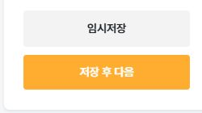
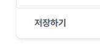
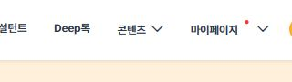
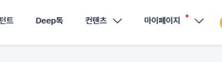

같은 제목 입력창인데 테두리 규격이 다릅니다


둘 다 제목을 입력하는 곳이지만 경계의 두께와 모서리가 다릅니다. DDS에서는 입력창의 크기·기본·포커스·오류 상태를 공통 규격으로 관리합니다. 강조가 필요하면 그 용도까지 정해 사용합니다.
화면을 만들 때 함께 사용하는 디자인 규칙과 UI 부품, 사용 방법을 모아 둔 공통 기준입니다.
색상·글자·간격부터 버튼의 상태와 입력 오류 안내까지, 매번 다시 결정하는 일을 줄입니다. 디자이너와 개발자가 같은 기준으로 화면을 만들고 고칠 수 있도록 돕습니다.
자기소개서를 쓰다가 내 정보를 수정하러 갔을 때, 같은 입력창과 저장 버튼을 다시 배워야 할까요? 공통 기준이 없으면 사용자는 화면마다 판단을 반복하고, 개발자는 같은 수정을 여러 곳에서 반복합니다.
딥레쥬메·딥인터뷰의 일반회원·컨설턴트 영역을 소스로 조사하고, 아래 항목은 실제 화면에서 확인해 촬영했습니다. 2026.11.02 기준입니다.
둘 다 제목을 입력하는 곳이지만 경계의 두께와 모서리가 다릅니다. DDS에서는 입력창의 크기·기본·포커스·오류 상태를 공통 규격으로 관리합니다. 강조가 필요하면 그 용도까지 정해 사용합니다.


작성 완료 버튼을 찾는 시각적 기준이 달라집니다. DDS에서는 주동작·보조동작의 위계를 정해, 사용자가 다음에 할 일을 쉽게 찾도록 합니다. 모든 버튼을 같은 색으로 만드는 것이 아니라 역할이 같은 버튼에 같은 기준을 적용합니다.


같은 메뉴도 화면별로 관리하면 표기와 간격이 어긋납니다. 공통 내비게이션은 이름·배치·선택·펼침 규칙까지 함께 관리해야 합니다. 디자인시스템은 색상표뿐 아니라 이런 사용 규칙도 포함합니다.
예를 들어 버튼 높이를 바꾸려면, 각 화면에서 따로 만든 버튼은 해당 구현을 찾아 각각 수정해야 합니다. 공통 Button을 사용하는 화면은 연결된 규격을 함께 바꾸고 화면별 배치와 동작을 검수할 수 있습니다.
| 작업 | 화면마다 정하면 | 공통 기준을 사용하면 |
|---|---|---|
| 입력창 추가 | 높이·테두리·라벨·오류 위치를 다시 정합니다. | Input 규칙을 재사용하고 필요한 필드와 검증을 연결합니다. |
| 버튼 높이 변경 | 각 화면의 CSS와 상태별 스타일을 찾아 고칩니다. | 공통 규격을 수정하고 사용하는 화면의 배치를 검수합니다. |
| 메뉴 이름 변경 | 화면별 헤더에서 누락된 곳이 없는지 찾습니다. | 공통 내비게이션의 표기를 바꾸고 사용처를 확인합니다. |
효과를 내려면 실제 화면이 공통 컴포넌트와 토큰을 사용하도록 연결해야 합니다. DDS 문서를 갖추는 것만으로 기존 화면이나 저장·인증 같은 기능이 자동으로 바뀌지는 않습니다.
같은 레고블록을 조립해 성도 만들고, 배도 만들 수 있습니다. 화면도 같은 버튼·입력창·카드를 목적에 맞게 조합해 만듭니다.
블록이 잘 맞물리려면 규격이 필요하듯, UI에도 공통 기준이 필요합니다. 화면의 목적과 흐름은 조립하는 사람이 정합니다.
색상·높이·간격 등에 이름을 붙인 값입니다. --primary처럼 역할로 연결합니다.
버튼, 입력창, 카드처럼 규격과 상태가 정해진 UI 단위입니다.
라벨·입력·오류 안내·저장처럼 반복되는 작업 흐름을 묶습니다.
서비스의 콘텐츠와 업무 흐름에 맞춰 컴포넌트와 패턴을 배치합니다.
자기소개서는 입력하며 미리 보고, 면접은 목록을 검색하며 고릅니다. 같은 컴포넌트의 배치와 반복 방식을 바꾸면 서로 다른 화면이 됩니다.
두 화면이 공유하는 부품입니다. 이름을 누르면 사용한 위치가 표시됩니다.
Button의 공통 크기를 바꾸면 두 화면의 행동 버튼에 함께 적용됩니다.
입력한 내용을 옆에서 확인하고 저장합니다.
검색과 선택으로 준비할 면접을 좁혀 갑니다.
면접 3개
고객 문제를 정의하고 우선순위를 정한 경험을 준비합니다.
목록의 상세보기를 누르면 예상 질문이 바뀝니다.
입력 Card와 미리보기 Card를 나란히 배치합니다. 입력한 값이 미리보기에 반영됩니다.
DDS(Deep Design System)는 딥레쥬메·딥인터뷰와 앞으로 만들 회사 서비스가 함께 사용하는 디자인 기준입니다.
주 행동인지 보조 행동인지, 제목인지 설명인지 구분한 뒤 문서에서 사용할 토큰과 컴포넌트 규칙을 찾습니다.
색상과 공통 규칙 보기기존 버튼·입력창에 공통 색상과 규격, 상태를 적용합니다. 기존 서비스의 이벤트·API·권한·저장 처리는 유지하면서 필요한 CSS와 마크업을 정리합니다.
컴포넌트 규칙 보기기본·호버·포커스·오류·비활성 상태와 모바일 배치를 확인합니다. 화면이 예뻐진 것과 저장·검증 같은 서비스 기능이 정상인지는 따로 검수합니다.
개발 적용 안내 보기DDS 문서의 디자인 기준과 구현 예제를 프로젝트의 UI 코드에 연결합니다. 서버 통신·권한·저장은 각 서비스의 기능에 맞게 구현하고 검수합니다. AI로 작업할 때도 프로젝트 환경과 적용 범위를 확인합니다.
DDS 적용 설정 보기